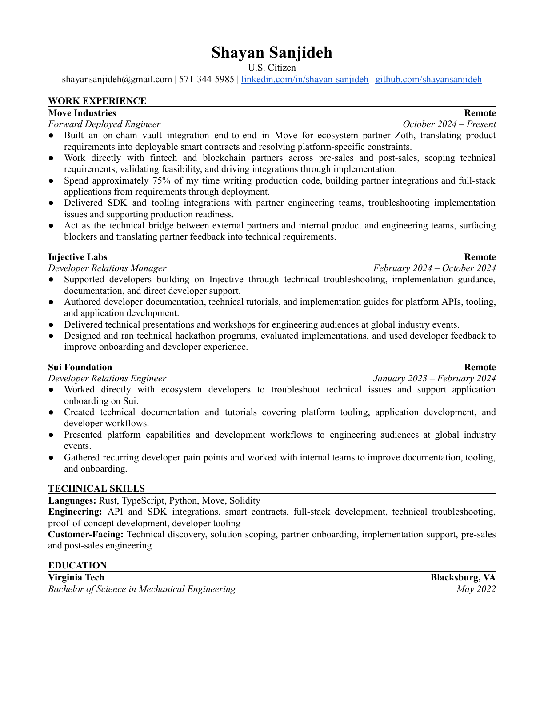

Shayan Sanjideh
U.S. Citizen
shayansanjideh@gmail.com | 571-344-5985 | linkedin.com/in/shayan-sanjideh | github.com/shayansanjideh
WORK EXPERIENCE
Move Industries
Remote
Forward Deployed Engineer
October 2024 – Present
● Built an on-chain vault integration end-to-end in Move for ecosystem partner Zoth, translating product
requirements into deployable smart contracts and resolving platform-specific constraints.
● Work directly with fintech and blockchain partners across pre-sales and post-sales, scoping technical
requirements, validating feasibility, and driving integrations through implementation.
● Spend approximately 75% of my time writing production code, building partner integrations and full-stack
applications from requirements through deployment.
● Delivered SDK and tooling integrations with partner engineering teams, troubleshooting implementation
issues and supporting production readiness.
● Act as the technical bridge between external partners and internal product and engineering teams, surfacing
blockers and translating partner feedback into technical requirements.
Injective Labs
Remote
Developer Relations Manager
February 2024 – October 2024
● Supported developers building on Injective through technical troubleshooting, implementation guidance,
documentation, and direct developer support.
● Authored developer documentation, technical tutorials, and implementation guides for platform APIs, tooling,
and application development.
● Delivered technical presentations and workshops for engineering audiences at global industry events.
● Designed and ran technical hackathon programs, evaluated implementations, and used developer feedback to
improve onboarding and developer experience.
Sui Foundation
Remote
Developer Relations Engineer
January 2023 – February 2024
● Worked directly with ecosystem developers to troubleshoot technical issues and support application
onboarding on Sui.
● Created technical documentation and tutorials covering platform tooling, application development, and
developer workflows.
● Presented platform capabilities and development workflows to engineering audiences at global industry
events.
● Gathered recurring developer pain points and worked with internal teams to improve documentation, tooling,
and onboarding.
TECHNICAL SKILLS
Languages: Rust, TypeScript, Python, Move, Solidity
Engineering: API and SDK integrations, smart contracts, full-stack development, technical troubleshooting,
proof-of-concept development, developer tooling
Customer-Facing: Technical discovery, solution scoping, partner onboarding, implementation support, pre-sales
and post-sales engineering
EDUCATION
Virginia Tech
Blacksburg, VA
Bachelor of Science in Mechanical Engineering
May 2022